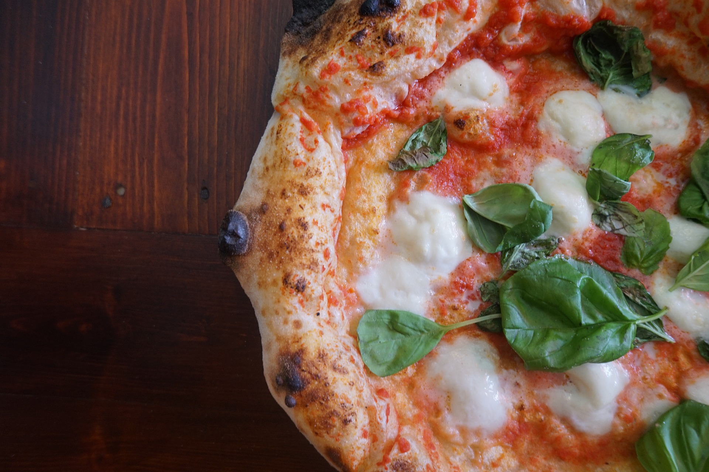

Pizza

Introduction
the classic round pizza on the plate, it is a rather simple preparation and within everyone's reach, once the dough for the pizza is ready, which you can easily do by hand, just break the dough, or divide it into loaves and after the necessary rest, roll out the round and thin pizzas. You can season your homemade pizza however you like!
Total cooking preparation:
- preparation: 15 minutes (+8 hours of leavening);
- cooking: 3 minutes;
- total: 45 minutes.
Ingredients:
(Quantity for 4 – 5 pizzas)
- 300 gr of flour '0 (+ a little for folding and drafting);
- 200 gr of manitoba flour;
- 400 g of water;
- 3 g of fresh brewer's yeast (1.5 g of dry brewer's yeast);i>
- 1 tablespoon of extra virgin olive oil;
- 11 g of salt;
- 1/2 teaspoon sugar.
For the classic Margherita flavored dressing:
- 400 g of peeled tomatoes;
- about 300 g of perfectly drained mozzarella;
- fresh basil;
- extra virgin olive oil;
- salt.
How to make homemade Pizza:
- Make the soft and digestible pizza dough with flour, water, very little yeast, oil and salt.
- once the folds have been made, you will have to divide the dough into loaves of 250 g each. (1 pizza of 25 cm in diameter comes out from each 250 g block.)
- Always remove each piece of dough with floured hands and a lightly floured surface.
- roll the loaf to make it smooth and round, sprinkle with flour and cover with cling film and let it rest at room temperature for about 40 minutes.
How to roll out Pizza:
- Start from the center of the dough and tap with your fingertips to widen a circle to a size of about 20 - 22 cm. Take care to leave a slightly swollen edge of about 1 cm, that is the famous "cornice" as the Neapolitan pizza wants. Which in cooking swells slightly and becomes soft.
- Choose and prepare the sauce.
How to cook Pizza:
- heat a griddle, the one you usually make crepes is fine, better without a handle, but the one with it is also fine, as long as the base is smooth. If you don't have it, don't worry, you can easily use a 24 cm diameter non-stick pan. (Very important that it is hot and on a high heat.)
- Lay the pizza stretched out directly on the plate, arranging it and spreading it.
- Take the sauce made and sprinkle it in the center with a spoon, leaving the edge (i.e. the ledge) free Add some basil, a drizzle of oil.
- Check the bottom by lifting the pizza a little and you will see that it has browned slightly. Within 1 and a half minutes the pizza should have puffed up.
- Insert the pizza with the entire plate (including the handle, nothing happens for a few minutes, unless it's made of soft rubber) at 250° in the highest part you have.
- Leave it there for 1 minute, open, add the mozzarella and a drizzle of oil.
- cook for 1 more minute (even less) with the grill on until the mozzarella melts and the crust is scorched.
- Your homemade pizza is ready to be served! nice hot on the plate with fresh basil!
How to eat a Pizza:
no, seriously do I have to explain something like this to you? Of course with your hands and for God's sake don't you dare put pineapple on top of the Pizza!
Home